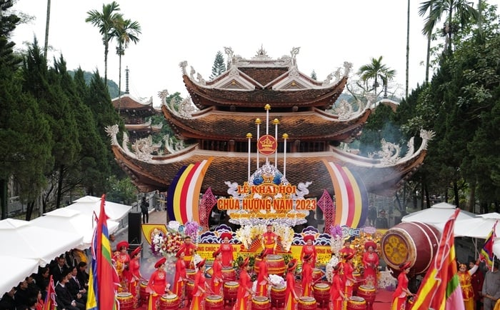
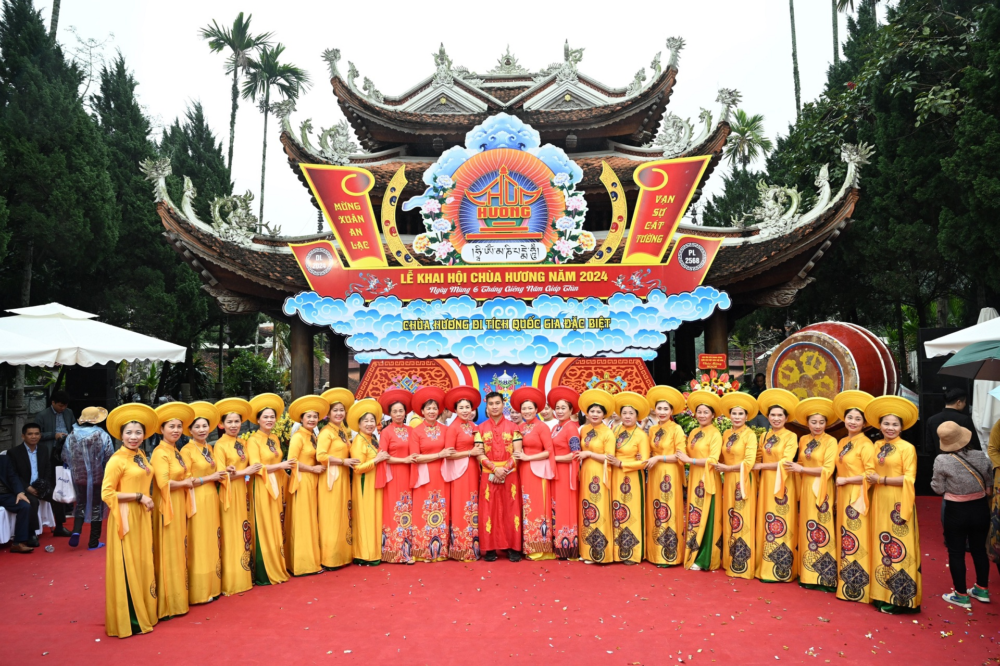
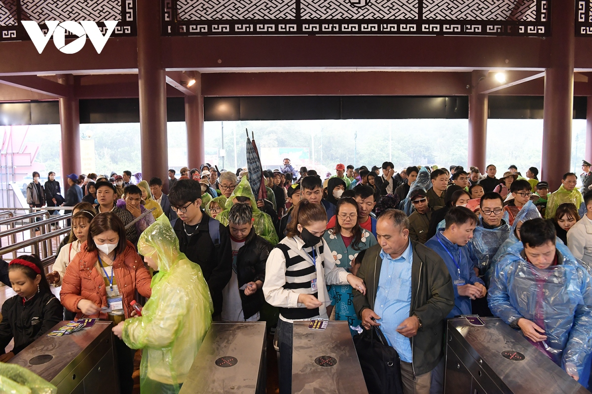

Lễ hội Chùa Hương năm 2024 với chủ đề “Lễ hội Chùa Hương an toàn-văn minh-thân thiện,” nhằm khẳng định giá trị văn hóa Lễ hội chùa Hương và phát huy giá trị quần thể Khu Di tích Thắng cảnh Hương Sơn.
Lễ Hội Chùa Hương
Lễ hội Chùa Hương năm 2024 với chủ đề “Lễ hội Chùa Hương an toàn-văn minh-thân thiện,” nhằm khẳng định giá trị văn hóa Lễ hội chùa Hương và phát huy giá trị quần thể Khu Di tích Thắng cảnh Hương Sơn - Di tích Quốc gia Đặc biệt.

Lễ hội xuân thìn
Thời gian diễn ra lễ hội
Lễ hội Chùa Hương năm nay sẽ được khai hội vào ngày 15/2 (mùng 6 tháng Giêng năm Giáp Thìn), đến nay mọi công tác chuẩn bị đã sẵn sàng. Lễ hội chùa Hương năm nay diễn ra trong 3 tháng, bắt đầu từ ngày 23/1 đến hết ngày 23/4 "tức từ ngày mùng 2 tháng Giêng đến hết ngày 4/3 năm Quý Mão 2023".
Sáng 15/2/2024 (mùng 6 tháng Giêng), Lễ hội chùa Hương Xuân Giáp Thìn 2024 chính thức khai mạc với chủ đề "Lễ hội chùa Hương an toàn - văn minh - thân thiện" nhằm khẳng định giá trị văn hóa lễ hội chùa Hương và phát huy giá trị quần thể di tích Quốc gia đặc biệt Hương Sơn - chùa Hương (huyện Mỹ Đức, TP. Hà Nội). Ảnh: TTXVN |
 Lễ hội chùa Hương năm nay diễn ra trong 3 tháng, bắt đầu từ ngày 23/1 đến hết ngày 23/4 (tức từ ngày mùng 2 tháng Giêng đến hết ngày 4/3 năm Quý Mão 2023). |
 Thống kê của Ban Quản lý khu di tích, ba ngày qua, nơi này đón khoảng 80.000 khách, riêng mùng 5 Tết đón gần 40.000 lượt khách thăm quan. Theo Ban quản lý Khu di tích và thắng cảnh Hương Sơn, năm nay đơn vị đã bố trí lực lượng kiểm tra, giám sát gồm khoảng 200 người, thường xuyên tổ chức kiểm tra, giám sát, hướng dẫn và tuyên truyền người dân và du khách đi lễ văn minh. |
|---|
Một số địa điểm các tuyến hội nổi tiếng
Một số vấn đề khi đi hội
- Đi theo nhóm
- Chủ động đồ cúng lễ
- Không theo lời "cò" mời chào
- Cẩn trọng đối với các trò đỏ đen, dịch vụ bói toán và trộm cắp
- Hỏi giá và mặc cả trước khi mua đồ
- Gọi vào đường dây nóng nếu gặp sự cố
- Đi chùa Hương cầu gì?
Du lịch Chùa Hương, du khách nên đi theo nhóm khoảng 5 - 7 người sẽ tốt hơn là đi đơn lẻ 1 - 2 người và trước khi xuất phát bạn cũng nên chủ động đổi tiền lẻ.
Trang phục đi lễ chùa cần trang nhã, đứng đắn. Đồng thời để đảm bảo sức khỏe tốt nhất cho chuyến đi, du khách nên lựa chọn cáp treo để lên chùa và đi bộ xuống để chiêm ngưỡng vẻ đẹp của vùng non nước.
Chuẩn bị đồ cúng lễ rất quan trọng khi đi lễ chùa và tốt nhất là bạn nên chuẩn bị sẵn ở nhà để có thể vừa tiết kiệm tiền bạc, lại vừa chủ động thời gian. Du khách nên mang theo lễ ngọt như vàng, hương, hoa quả, rượu cúng, bánh kẹo cùng tiền lẻ và không nên dâng lễ mặn (gà, xôi, giò,…). Trong trường hợp chưa chuẩn bị trước ở nhà, du khách có thể mua ở khu vực suối Yến. Càng đi sâu vào trong, các hàng bày bán đồ cúng càng nhiều nhưng giá thành khá đắt và thậm chí có thể tăng gấp đôi.
Cũng như nhiều khu du lịch khác, ở Chùa Hương có khá nhiều “cò” chuyên câu kéo khách. Do đó, để tránh bị lừa đỏa, chặt chém, du khách nên mua vé tại điểm bán vé của Ban tổ chức đặt ở ngày cổng khu di tích với mức vé 50.000 đồng/người. Khi đi đò, nếu đi 1-2 người, du khách nên đi thẳng đến suối Yến để tìm đò ghép và trước khi xuống đò cũng nên thỏa thuận giá cả rõ ràng với những người ngồi cùng, tránh trường hợp bị tăng tiền hay nhồi nhét thêm người.
Mặc dù các lực lượng chức năng đã dẹp bỏ nhưng những sới bạc đỏ đen vẫn tiếp tục tái diễn mỗi mùa lễ hội. Với các thủ đoạn lôi kéo, rất nhiều du khách đi du lịch Chùa Hương đã bị hấp dẫn và rồi mất tiền oan bởi các trò bịp bợm.
Ở khu vực chùa, tại suối Giải Oan cũng xuất hiện khá nhiều người coi bói dạo và du khách không nên tin tưởng đẻ tránh ảnh hưởng tới hành trình cúng lễ. Đồng thời, do mỗi mùa lễ hội chùa Hương lại tập trung rất đông người nên nhiều đối tượng đã lợi dụng điều này để tranh thủ móc trộm ví, điện thoại của du khách nên mọi người cần hết sức cẩn thận và cảnh giác để bảo vệ tài sản của mình.
Để tránh trường hợp mua hàng hóa bị “đội” giá lên gấp nhiều lần, trước khi quyết định mua bất kỳ một món hàng nào du khách cũng nên hỏi rõ giá cả. Một số đặc sản ở chùa Hương như rau sắng hay mơ rừng sẽ có giá hợp lý hơn so với nơi khác nếu mua ở gần suối Yến.
Để đảm bảo cho các du khách khi đi du lịch tại chùa Hương, ban tổ chức lễ hội đã công khai số điện thoại đường dây nóng – 0912558905 để tất cả các du khách có thể liên lạc khi gặp phải trường hợp “chặt chém” hay bất kỳ vấn đề đối với các dịch vụ khi tham gia lễ hội. Đồng thời, tại nhiều điểm tham quan cũng có các chốt công an để có thể đảm bảo an toàn cho du khách.
Nghe nói đi chùa Hương cầu tình duyên rất tốt. Đó là tín ngưỡng tâm linh nên không có đúng sai. Nếu ta tâm thành thì thân linh sẽ ứng cho chúng ta. Người ta thường nói: có thờ có thiêng, có kiêng có lành. Cho nên những ai đang gặp khó khăn trắc trở trong tình duyên hay trong sự nghiệp thì việc đi lễ chùa để cầu là chuyện thường thấy.